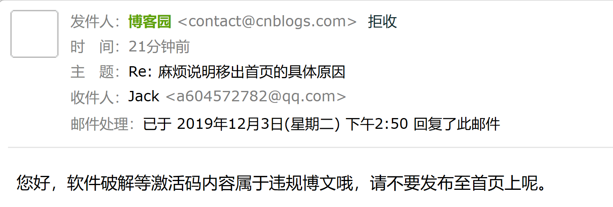
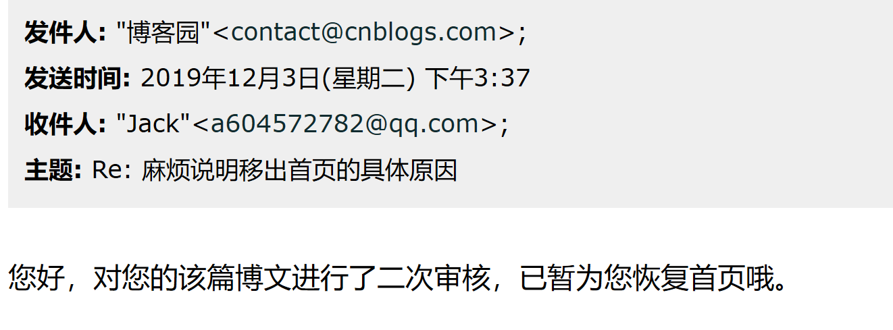
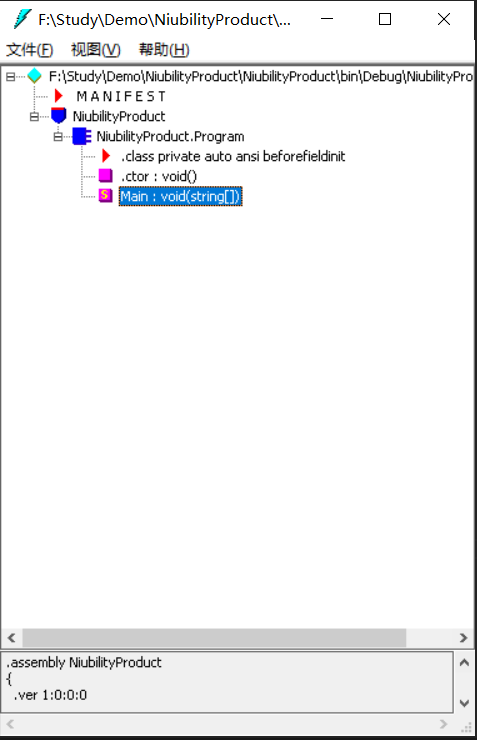
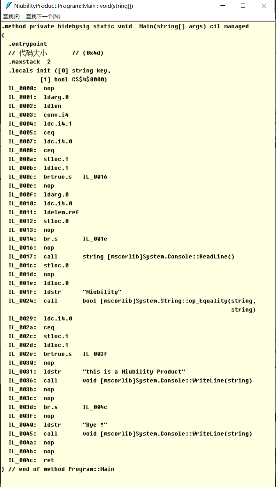
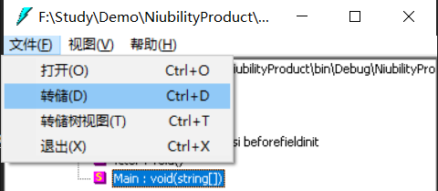
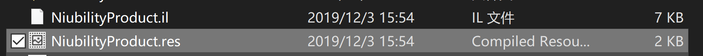
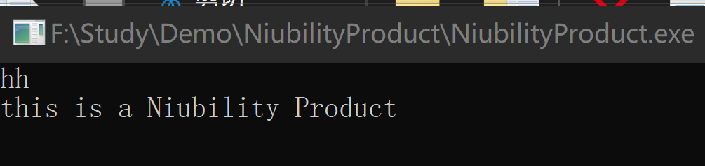

NLog日志框架使用探究-1
NLog日志框架使用探究-2
科学使用Log4View2
本来没有想写反编译相关的文章，但是写着写着就扯到反编译破解了。更何况上一篇《科学使用Log4View2》文章还被管理员移出了首页。

花了几个小时写的文章被移除首页的感受你们了解吗？终于凭借我的三寸不烂之舌终于打动管理大大恢复到了首页。

为了更加合规合法，因此有了该篇文章。
上一篇文章我们使用DnSpy可以非常方便的反编译甚至可以直接修改IL并生成新的程序集。本篇文章我们就来讲讲在DnSpy出现之前，我们是如何修改程序集的。
在没有DnSpy这等强大的反编译工具之前，若需要修改程序集，一般都需要使用微软官方提供的ILDasm反编译，ILAsm编译IL。
本篇文章的重点不是谈论IL的语法，IL如何阅读，想要了解这些，网上一搜一大把。推荐一篇吧：https://www.cnblogs.com/zery/p/3366175.html。
IL拆解器是IL汇编器（Ilasm.exe）的配套工具。ILDasm.exe采用包含中间语言（IL）代码的可移植可执行（PE）文件，并创建适合作为ILasm.exe 输入的文本文件。
这是官方的解释，说白了就是它可以将.Net程序集反编译为IL语言文件，同时该文件可以被ILasm读取并处理(编译)。
ILdasm的路径在C:\Program Files (x86)\Microsoft SDKs\Windows\vXXA\bin下可以找到。
上一篇文章主要因为涉及到破解被移除了首页，虽然我死不承认，一直说我是在科学使用。
但是为了不惹麻烦，这次我学聪明了。我只会科学使用别人的软件，但是我会破解自己的软件。
为此我特意编写了一个非常牛逼的产品我称之为NiubilityProduct。
它的功能是当输入参数为Niubility时，它会展示这个产品有多牛逼。
一般人没办法看到它有多牛逼，为此我们需要破解它。
static void Main(string[] args)
{
string key;
if (args.Length == 1)
{
key = args[0];
}
else
{
key = Console.ReadLine();
}
if (key == "Niubility")
{
Console.WriteLine("This is a Niubility Product");
}
else
{
Console.WriteLine("Bye !");
}
Console.ReadKey();
}和DnSpy一样，我们可以将dll或exe文件直接拖入到ILdsam。

界面比较清爽简洁。双击Main方法就能显示出IL语言

但是ILdsam不能编辑IL，前面说了它可以将程序集反编译为IL文件。在菜单栏中选择文件然后点击转储，将其保存包含IL的il后缀的文件。

他会生成一个il后缀的文件以及一个res后缀的文件

IL文件可以使用文本打开
.class private auto ansi beforefieldinit NiubilityProduct.Program
extends [mscorlib]System.Object
{
.method private hidebysig static void Main(string[] args) cil managed
{
.entrypoint
// 代码大小 77 (0x4d)
.maxstack 2
.locals init ([0] string key,
[1] bool CS$4$0000)
...
IL_0016: nop
IL_0017: call string [mscorlib]System.Console::ReadLine()
IL_001c: stloc.0
IL_001d: nop
IL_001e: ldloc.0
IL_001f: ldstr "Niubility"
IL_0024: call bool [mscorlib]System.String::op_Equality(string,
string)
IL_0029: ldc.i4.0
IL_002a: ceq
IL_002c: stloc.1
IL_002d: ldloc.1
IL_002e: brtrue.s IL_003f
IL_0030: nop
IL_0031: ldstr "this is a Niubility Product"
IL_0036: call void [mscorlib]System.Console::WriteLine(string)
IL_003b: nop
IL_003c: nop
IL_003d: br.s IL_004c
IL_003f: nop
IL_0040: ldstr "Bye !"
IL_0045: call void [mscorlib]System.Console::WriteLine(string)
IL_004a: nop
IL_004b: nop
IL_004c: ret
} // end of method Program::Main我们可以不管输入什么值, 无需判断直接调用if里面的指令，调用完后会跳转到IL_004C。
IL_0017: call string [mscorlib]System.Console::ReadLine()
IL_001c: stloc.0
IL_001d: nop
IL_001e: nop
IL_001f: nop
IL_0024: nop
IL_0029: nop
IL_002a: nop
IL_002c: nop
IL_002d: nop
IL_002e: nop
IL_0031: ldstr "this is a Niubility Product"
IL_0036: call void [mscorlib]System.Console::WriteLine(string)
IL_003b: nop
IL_003c: nop
IL_003d: br.s IL_004c修改完成我们需要将IL重新进行编译
ILasm在win10下可以直接搜索到。或者在.net 4.0及以上在C:\Windows\Microsoft.NET\Framework64\v4.0.30319目录可以找到，.net 3.5在C:\Windows\Microsoft.NET\Framework64\v2.0.50727目录可以找到。
通过命令ilasm /exe /output=输出文件完整路径 /Resource=资源路径 IL文件路径
F:\Study\Demo\NiubilityProduct>ilasm /exe /output=NiubilityProduct.exe /Resource=NiubilityProduct.res NiubilityProduct.il
Microsoft (R) .NET Framework IL Assembler. Version 4.8.3752.0
Copyright (c) Microsoft Corporation. All rights reserved.
Assembling 'NiubilityProduct.il' to EXE --> 'NiubilityProduct.exe'
Source file is UTF-8
Assembled method NiubilityProduct.Program::Main
Assembled method NiubilityProduct.Program::.ctor
Creating PE file
Emitting classes:
Class 1: NiubilityProduct.Program
Emitting fields and methods:
Global
Class 1 Methods: 2;
Emitting events and properties:
Global
Class 1
Writing PE file
Operation completed successfully
F:\Study\Demo\NiubilityProduct>现在调用随便输入什么都能看到这个产品的牛逼之处

本篇文章涉及到使用ILDasm和ILasm进行反编译和编译。掌握了本篇的技能之后你会发现...还是DnSpy好用
微信扫一扫二维码关注订阅号杰哥技术分享
出处：https://www.cnblogs.com/Jack-Blog/p/11978817.html
作者：杰哥很忙
本文使用「CC BY 4.0」创作共享协议。欢迎转载，请在明显位置给出出处及链接。